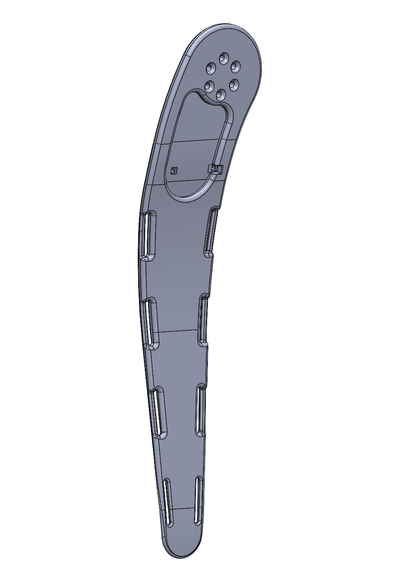
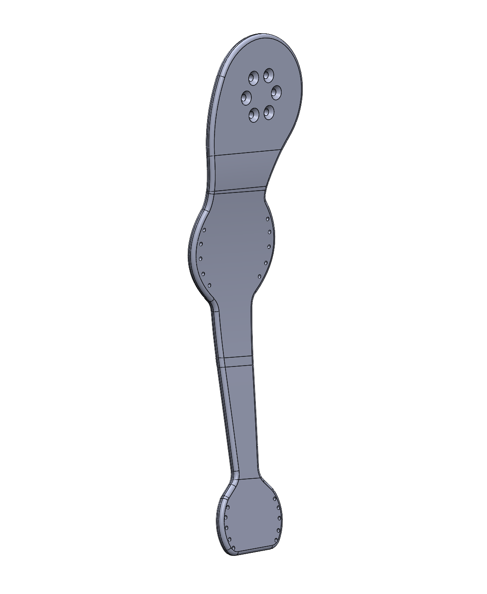
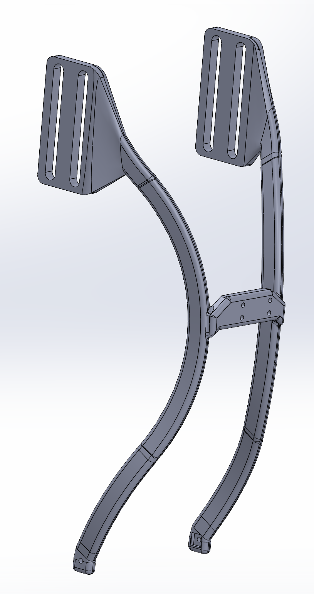
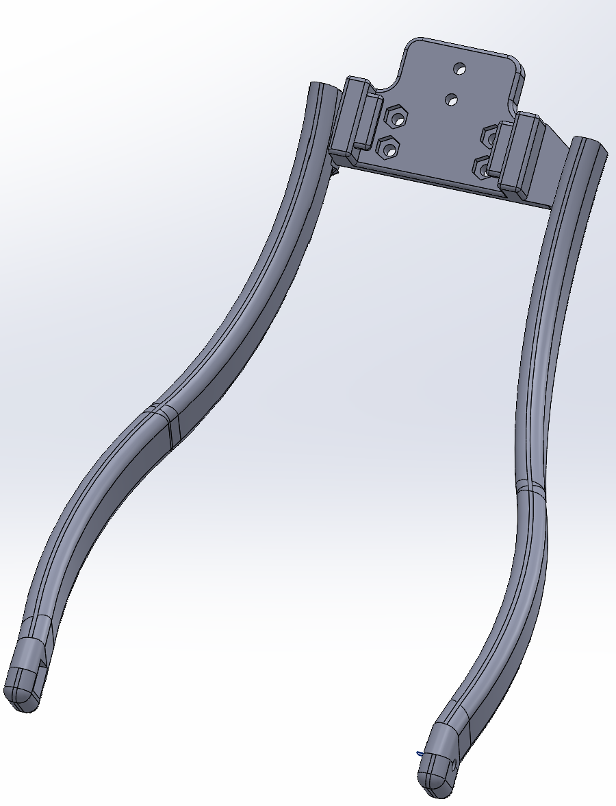
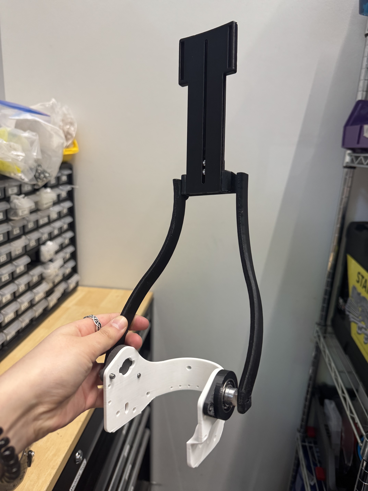

ASSISTIVE TECHNOLOGY · MECHANICAL DESIGN · GEORGIA TECH EPIC LAB
Lower-Limb Exoskeleton Design
Engineering mechanical components, fabric interfaces, and carbon fiber structural elements for wearable robotics.
Overview
As an undergraduate researcher in the Exoskeletons and Prosthetics Intelligent Controls (EPIC) Lab at Georgia Tech, I focus on mechanical hardware design, user-interface ergonomics, and advanced composite manufacturing for wearable robotics. My work spans component modification for both the HiKe (Hip-Knee) Exoskeleton and the Ankle Exoskeleton platforms.
My Contribution & Subsystems
1. HiKe (Hip-Knee) Exoskeleton Shank Strut Redesign
- Ergonomic & Structural Optimization: Redesigned the HiKe exoskeleton shank strut to reduce overall profile and weight while optimizing anatomical fit and leg alignment during movement.
- Torque Transmission & Fabric Coupling: Upgraded the fabric attachment interface using custom sewing techniques and integrated a collapsible foam structure to maximize actuator torque transfer efficiency from motors to the knee joint.
- Prototyping & Production: Iterated geometry through rapid 3D printing for ergonomic fit checks before manufacturing the final verified strut assembly in structural carbon fiber for clinical trials.
HiKe Shank Strut (Original Design)

HiKe Shank Strut (Redesigned)

2. Ankle Exoskeleton Cuff & Structural Redesign
- Attachment Streamlining: Re-engineered the ankle exoskeleton strut-to-leg mounting system, replacing a dual-side cuff with a simplified single-point attachment located at the back of the calf.
- Usability & Adjustability: Redesigned fabric cuff to be tightenable using Boa dials and allowed for vertical adjustment of the shank cuff on the leg using a slot/channel design on the strut.
Original Ankle Shank Strut

Modified Single-Point Strut

Final Assembled Prototype

3. Composite & Additive Manufacturing
- Composite Fabrication: Executed pre-preg carbon fiber layups, vacuum bagging, autoclave curing, and precision hand-sanding to manufacture high-strength structural struts and heel cuffs across multiple demographic sizes.
- Polymer Additive Manufacturing: Operated Selective Laser Sintering (SLS) 3D printers to fabricate durable nylon mechanical components, followed by depowdering and post-processing.
Key Learnings
Gained hands-on expertise in human-robot physical interaction design, balancing structural design requirements with wearability, and executing pre-preg carbon fiber composite manufacturing for bio-mechatronic systems.